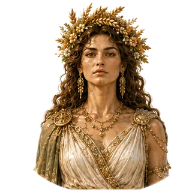
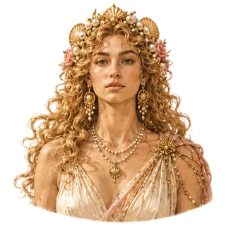
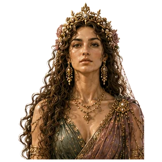
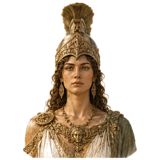
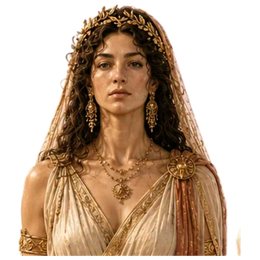
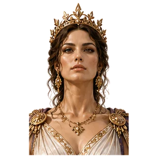
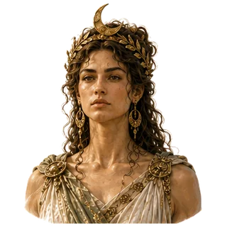

Ἄρτεμις
Ártemis
Na luzEscolher os seus caminhos
Um primeiro encontro com você
Responda a cenas do dia a dia e descubra qual das sete deusas está regendo as suas escolhas hoje.
ἈθηνᾶAtenaplanejar e decidir
Antes de começar
Cuido de todo mundo e acabo assumindo o que nem é meu.

Deméter, na sombra por excessoΔημήτηρO que me dá prazer sempre fica para depois.

Afrodite, na sombra por escassezἈφροδίτηA opinião e o humor dos outros acabam decidindo por mim.

Perséfone, na sombra por excessoΠερσεφόνηPlanejo e explico tudo, e quase não sobra espaço para sentir.

Atena, na sombra por excessoἈθηνᾶNão encontro uma pausa de silêncio para voltar para mim.

Héstia, na sombra por escassezἙστίαManter a relação vem antes dos meus projetos e limites.

Hera, na sombra por excessoἭραFaço tudo sozinha: pedir ajuda é difícil.

Ártemis, na sombra por excessoἌρτεμιςCada frase é uma deusa falando alto demais, ou calada demais. O seu mapa mostra qual delas fala mais alto em você.
As sete deusas
Na luz , cada uma ajuda. Na sombra , passa do ponto ou fica sem espaço. Toque numa carta para virar.
Ἄρτεμις
Na luzEscolher os seus caminhos
Ἀθηνᾶ
Na luzPlanejar e decidir
Ἑστία
Na luzEncontrar o seu centro
Ἥρα
Na luzConstruir parcerias
Δημήτηρ
Na luzCuidar e sustentar
Περσεφόνη
Na luzOuvir e atravessar mudanças
Ἀφροδίτη
Na luzCriar e se encantar
Como funciona
Cenas do dia a dia. Em cada uma, toque no que você faria primeiro e no que menos faria.
Veja qual deusa rege as suas escolhas e onde cada uma das sete aparece em você.
Se quiser, siga pelo relatório completo, pelo e-book da sua deusa ou pela consulta.
Sem resposta certa · pause quando quiser · o mapa fica só no seu aparelho
Depois do mapa
O questionário
Grátis
A deusa que rege as suas escolhas, o lugar das sete em você e um primeiro sinal de sombra.
No seu ritmo
R$ 9,99
Um guia curto sobre as duas sombras da sua deusa, com práticas para a semana.
Ver os sete e-booksCom Yasnnajára
Online
A leitura completa do método, com a sua história: a deusa que rege e as duas sombras.
O relatório completo, com as sete áreas da vida, aparece no fim do seu mapa. Você só decide depois de ver.
R$ 9,99 cada. Pagamento pela Hotmart e acesso no seu e-mail assim que o pagamento é confirmado.
Quem criou o método
Trabalha com desenvolvimento humano e quebra de padrões. Criou o Método das Deusas para que cada mulher se enxergue nas próprias escolhas, com sete deusas gregas dando nome ao que ela já vive.
Conhecer o trabalho delaSeu primeiro passo
Comece grátis. Você decide como continuar depois de ver o seu mapa.
Dúvidas
Não. O questionário e o primeiro mapa são gratuitos. O relatório completo, com as sete áreas da vida, é pago à parte, e você só decide depois de ver o seu mapa.
A deusa que está regendo as suas escolhas, o caminho até ela, o lugar de cada uma das sete em você, um primeiro sinal de sombra e uma área da vida aberta como amostra.
Cerca de 15 minutos. Você pode pausar e voltar depois, e pular uma cena que nunca viveu.
Aparecem algumas perguntas rápidas só com as finalistas. Se o empate continuar, o mapa mostra as duas lado a lado: ter duas regentes também é um resultado.
O mapa fica só neste navegador, por até 30 dias, e você pode apagá-lo quando quiser. Não pedimos nome, e-mail nem histórico de saúde.
Você vai ler cenas do dia a dia, cada uma com quatro reações possíveis. Pense no que você faria de verdade, não no que seria o ideal.
Você ganhou uma tarde livre que não esperava.
Toque no que você faria primeiro.
Suas respostas deixaram duas deusas lado a lado. Mais algumas escolhas rápidas decidem quem rege as suas escolhas.
Responda pelo primeiro impulso. Cada escolha tira uma deusa da disputa.Responda pelo que você faz, não pelo que gostaria de fazer.